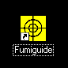
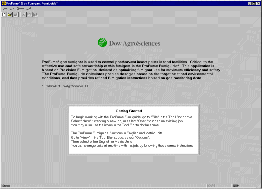
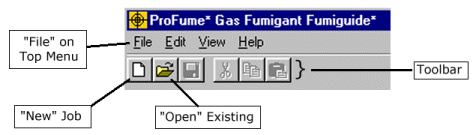
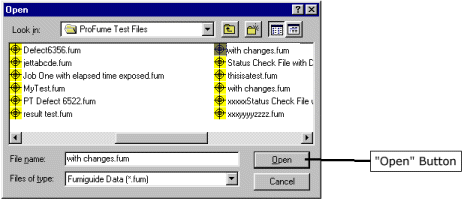
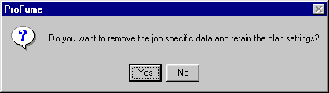
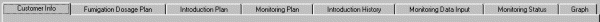
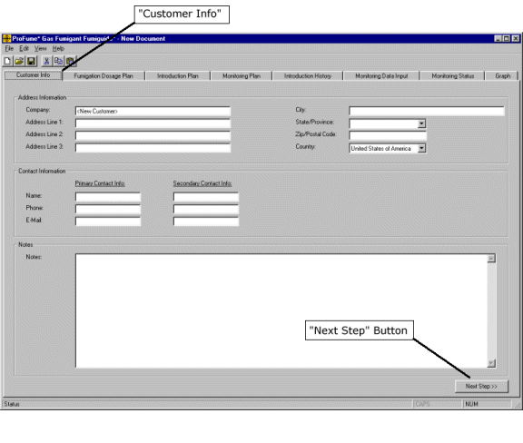
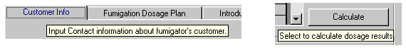
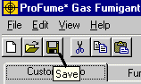
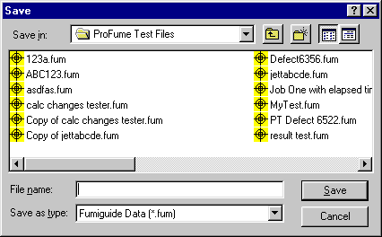

Running the Program and Managing Files
To begin working with the ProFume Fumiguide, double click on the ProFume icon on the bottom of your computer display.

The program will open to the screen below.

Top Menu: The menu located at the top of the application. Menu items include File, Edit, View and Help.
Toolbar: A group of functions located below the Top Menu: New, Open, Save, Print, Cut, Copy and Paste.

Now that you have the ProFume Fumiguide running, go to "File" on the top menu above. Select "New" if you are creating a new job, or select "Open" to open an existing job. You may also use the icons in the toolbox to do the same.
When you open an existing job, any previously saved files will be found in the folder where you placed them (see below). Select the file within the folder by clicking on the file name, example "with changes.fum" and clicking the "Open" button.

If you are fumigating the same structure again and you have a previous Fumiguide file for that structure, you can open that file and simply change the file name to reflect the current job. For example, if your have a "Pinnacle02.fum" file and that property will be fumigated in 2003, you can open that file, update the data with current details and save the new file as "Pinnacle03.fum". Remember to use the Save As (F12) operation under File on the Top Menu. This will save you time entering customer information and fumigation conditions.
Notice the message box that will appear as you perform the Save As [new file name] operation. If you do not want the ProFume concentration monitoring data in the new file, then select Yes. If you want the ProFume concentration monitoring data in the new file, select No.

The ProFume Fumiguide will open displaying the "Customer Information" tab (see below). Notice the other tabs within the Fumiguide.

Here is a description of these tabs.
Customer Information - The first tab in the ProFume Fumiguide where address, contact details and notes can be stored for the fumigation.
Fumigation Dosage Plan - Stores all information and variables pertaining to the calculation of a fumigant dose and dosage.
Introduction Plan - The third tab in the ProFume Fumiguide for entering introduction lines, fans and calculating actual and permitted introduction rates for various areas of a structure.
Monitoring Plan - The fourth tab within the ProFume Fumiguide where monitoring line location is set up (monitoring points per areas).
Introduction History - The fifth tab in the ProFume Fumiguide for recording quantities of fumigant released in the various areas of a structure.
Monitoring Data Input - The sixth tab in the ProFume Fumiguide for entering monitoring data.
Monitoring Status - The seventh tab in the ProFume Fumiguide where elapsed time, HLT, Start & End time of HLT, CT achieved/projected and status/recommendations are displayed by monitoring point.
Graph - The eighth tab in the ProFume Fumiguide for graphing the concentration by time for each monitoring point.
You can navigate the next tab by clicking the Next Step button on the lower right hand corner of all ProFume Fumiguide tabs. You can also click on the Tab name at the top of screen.

"Mouse Over" Messages
While using the ProFume Fumiguide, you will notice message temporarily displayed when you move the cursor over various areas of the screen. These helpful messages explain or clarify the function beneath the cursor. Below are a two examples of these "Mouse Over" messages.

After working on a file you should save information by clicking on the "Save" Icon. NOTE: It is highly recommended to save frequently while entering data.

The Save window will open and you should enter an appropriate file name (by date, job name, city of fumigation, etc).

Running Multiple Copies of the Fumiguide Simultaneously. The ProFume Fumiguide is designed where you may have multiple copies of the program running with separate jobs open at the same time.